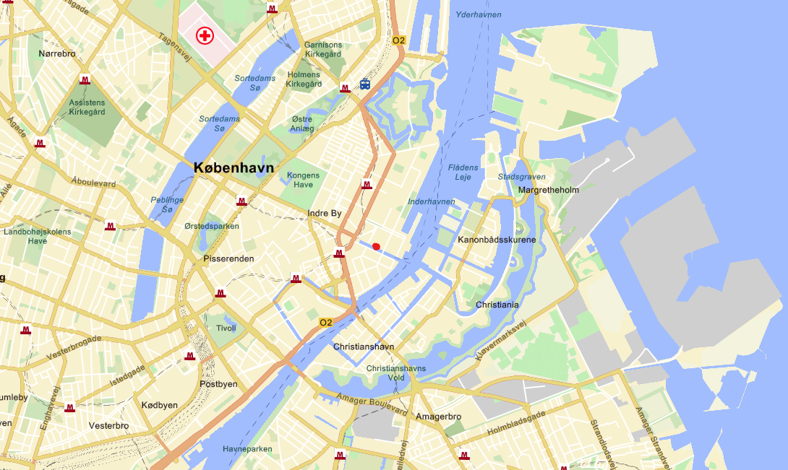

Stay in the heart of Copenhagen with a holiday apartment in Nyhavn.
Wake up to the charm of colorful 17th-century townhouses, lively cafés, and the iconic waterfront right outside your door.
From here, you can easily explore the city’s top attractions on foot or by boat, while enjoying the comfort and privacy of your own space.
A Nyhavn apartment offers the perfect blend of authentic Danish atmosphere and modern convenience—ideal for both relaxation and adventure. These apartments are located in a courtyard adjacent to Nyhavn, and therefore gives access to it but also shielding form the noise/activity there.
Wake up to the charm of colorful 17th-century townhouses, lively cafés, and the iconic waterfront right outside your door.
From here, you can easily explore the city’s top attractions on foot or by boat, while enjoying the comfort and privacy of your own space.
A Nyhavn apartment offers the perfect blend of authentic Danish atmosphere and modern convenience—ideal for both relaxation and adventure. These apartments are located in a courtyard adjacent to Nyhavn, and therefore gives access to it but also shielding form the noise/activity there.




From a Nyhavn apartment, Copenhagen’s top attractions are just a short walk away:
Amalienborg Palace – 6 min
Kongens Nytorv & Strøget – 3 min
The Royal Theatre – 5 min
The Little Mermaid – 15–20 min
Christiansborg Palace – 15 min
The Round Tower – 15 min
Rosenborg Castle & The King’s Garden – 15 min
Tivoli Gardens – 20 min
National Museum – 20 min
Ny Carlsberg Glyptotek – 20–25 min